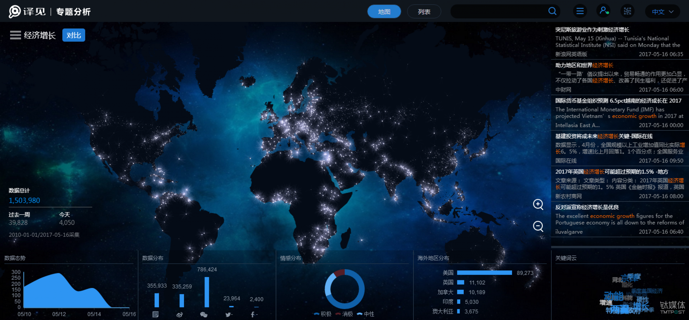
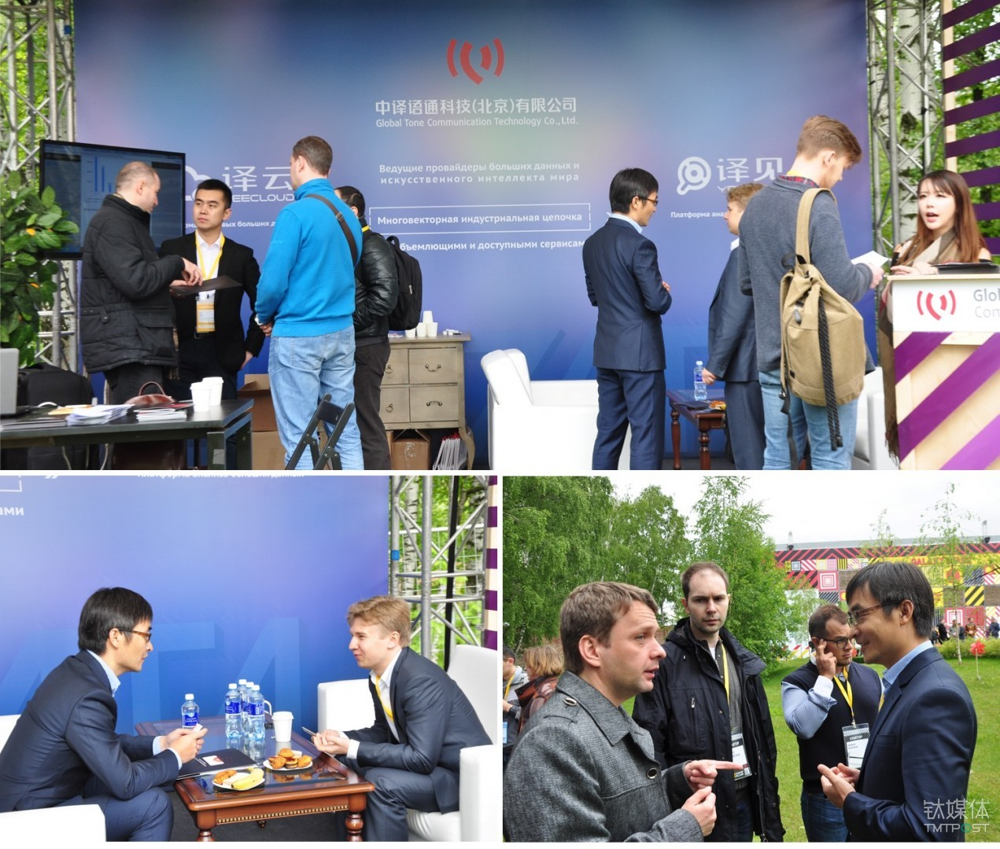

Media Source:钛媒体Date: 14 July 2017views:294
In the era of video consumption, content platforms need to update tens of thousands of episodes each year and spend billions of yuan in copyright investment. The introduction of copyright dramas has not been matched by the traditional method of "subtitling translation groups." The traditional mode of human translation by such groups is, with the maturity of machine translation, being replaced.
Since 2013, YeeCaption, a video-translation software based on multilingual speech recognition and machine translation, has saved the day for video websites that spend a lot of money on purchasing copyrights, in the process maximizing the convenience of the cumbersome video subtitle translation. The software facilitates one-stop operation from timeline segmenting and subtitle (speech) recognition to subtitle translation, production and finished-product exporting.
Machine translation has not only changed the way Chinese people watch dramas but has also changed the technical process of Internet video giants.
Global Tone Communication Technology Co., Ltd. (GTCOM), the parent company of the YeeCaption product, has worked tirelessly behind the scenes of the industry, providing professional language services for the industry. According to TMTpost, more than 80% of the subtitle translations for overseas copyright dramas consumed by Internet users in China are completed with YeeCaption.
GTCOM CEO Eric Yu
GTCOM has established extensive strategic partnerships with universities and research institutes at home and abroad, targeting joint technological research and development. It has established big-data news laboratories together with the School of Journalism and Communication at Renmin University of China and its counterpart at Tsinghua University, doing so for the conduct of research on various algorithms on open news data. Additionally, GTCOM is one of the sponsors of the Language Big Data Alliance (LBDA). To date, LBDA covers more than 150 universities, including Beijing Foreign Studies University, Shanghai International Studies University, Beijing Language and Culture University, Macao Polytechnic Institute, and Chinese University of Hong Kong as well as the University of Vienna, State University of New York, the University of Geneva, and York University of Canada. GTCOM and LBDA members have established joint laboratories in the areas of big-data analytics, machine translation and speech recognition in order to accelerate the development of technologies and the transformation of results.
"Language shouldn't be an obstacle to people's communication or access to information": This was GTCOM's original intention as it set out to invest in the research and development of machine translation.
In June of this year, GTCOM CEO Eric Yu told TMTpost that from 2013 to 2016 the company invested heavily in the research and development of machine translation and big data. The cumulative investment in the development of machine translation exceeded RMB 200 million, and the annual investment in the development of big-data analysis exceeded RMB 100 million. In 2017, GTCOM strengthened and expanded its exploration of cross-language big-data technology. Not only did it comprehensively accelerate the corpora training of machine translation in vertical areas and the number of languages, but it also increased its investment in the research and development of data mining, high-quality data analysis of various algorithms and artificial intelligence applications.
In 2016, GTCOM completed series B financing of RMB 250 million and series B+ financing of RMB 150 million. The two rounds of financing (a total of RMB 400 million) secured by GTCOM within six months put the company in the spotlight.
In-depth scenario-based application of big data services
In December of last year, at the YeeSight Big Data Summit in Beijing, GTCOM announced the series B+ financing and released the 2.0 version of the YeeSight Big Data Analysis Platform. At that point, GTCOM, which had expected to free itself of the "translation provider" label, formed a matrix of two platform products--the YeeCloud language technology ecosystem and the YeeSight big-data analysis platform--and thus joined the ranks of big-data and artificial intelligence companies. GTCOM is now included in the list of China's big-data quasi-unicorns in 2016, and GTCOM ranks fourth in terms of financing quotas for Chinese local artificial intelligence companies.
GTCOM has shifted its focus to the field of big-data analysis since 2015 and has formally proposed the concept of cross-language big data. Since then it has launched the YeeSight big-data analysis platform--a cross-language application product--as well as big-data technologies oriented toward a variety of vertical industries, global enterprises and government platforms. Consequently, GTCOM has reached and fortified the core of its business model.
Like many big-data companies in China, the application scenarios of the YeeSight big-data platform mainly include analysis and decision, market research, information analysis, precision marketing and public trend forecasting for commercial organizations. Users can analyze any topic (or topics) on the YeeSight data platform. For example, for the keywords of "air pollution," "economic growth" and "urbanization," the system can draw intrinsic connections and trend predictions among the three keywords within a specified time range and then demonstrate them through the visualization effect.

Visualization effect diagram of the YeeSight big-data platform
"We have more than two million independent website data sources in more than 65 languages, all of which are manually and accurately classified," Yu told TMTpost. "Each data source we see today is configured technically and separately. The data thus acquired is intelligently structured prior to big-data analysis. In this way the vast knowledge graphs of unstructured data are built day after day."
The combined services of artificial intelligence and big data have also penetrated into different vertical areas through major partners. GTCOM has established 24/7 global multilingual call centers in 11 languages for China UnionPay, with a cumulative call duration of more than several hundred thousand minutes per month. The company even built the "Belt and Road Cross-Language Big Data Analysis Platform" for Shaanxi Province. Additionally, it officially became one of Alibaba Cloud's strategic partners at the 2016 Computing Conference. Furthermore, at the Hannover Messe in Germany in early 2017, GTCOM reached a strategic partnership with Haier to assist with the global competition among industrial enterprises.
As of 2017, GTCOM's data mining capabilities already covered more than 200 countries and 65 languages. GTCOM has more than two million independent data sources as well as EB-level global Internet open text and social data along with knowledge graphs numbering in the hundreds of billions.
This is why industry insiders benchmark GTCOM, a big-data company based in the U.S. Founded in 2004, assists the U.S. government in providing effective and predictable big-data analysis services for key departments such as the Central Intelligence Agency (CIA), the Department of Homeland Security, the Federal Bureau of Investigation (FBI) and the National Security Agency.
Public information shows that 's latest valuation has reached US$20 billion.
GTCOM's differentiation in data services is the concept of "cross-language big data" it proposed. To date, GTCOM's machine translation has supported 32 languages and 992 language pairs. "If the searched big data in all languages such as English, Japanese, French and Portuguese were collected and analyzed qualitatively and quantitatively, with language labels of the data being removed, the value of the obtained results would far exceed the value of the big data we had previously understood," Yu said.
Capability in regard to big data directly determines GTCOM's competitiveness in the field of machine translation. As Mr. Yu told TMTpost, "Machine translation is the most complex technology in artificial intelligence and big data. Everyone calls it the 'Pearl in the Crown.' From the earliest R&D of machine translation to the rapid understanding of applications of natural-language processing technology and machine learning, today's cross-language big-data search and analysis has been extended, becoming the cornerstone of GTCOM's cross-language big data."
Language big-data support for the world
GTCOM is also one of the active participants in the implementation of the Belt and Road Initiative.
The YeeSight big-data analysis platform went overseas again in June of 2017. However, based on abundant overseas resources, GTCOM embarked on the path of internationalization very early. At the Startup Village, the largest technology innovation event in Russia and the Eastern European CIS, the company executed strategic cooperation agreements with the Skolkovo Foundation, the Lomonosov Moscow State University (Russia's top university in terms of comprehensive ranking) and i-Free, a well-known Russian mobile Internet company.

GTCOM at Startup Village event in Russia
GTCOM Vice President Elena Zhang delivered a keynote speech at the conference, in which she announced that GTCOM would build a Russian-centered cross-language big-data platform at Lomonosov Moscow State University in order to provide cross-language big-data think-tank services for more than 20 countries in Russia and Eastern Europe. GTCOM will also provide technical support for scenario-based applications of the i-Free artificial intelligence platform in multiple fields.
According to the "Belt and Road Big Data Report" issued by the China State Information Center in 2016, the China-Russia "country cooperation index" is in first place among China's cooperative programs with 64 countries along the Belt and Road. Accordingly, GTCOM has chosen Russia as the focus of overseas expansion in 2017.
To make cross-language big data benefit the entire world, GTCOM has long opened its machine translation and big-data technologies to the industry so as to continuously train and accumulate corpus. Moreover, GTCOM has upgraded the technologies to provide tremendous energy and space for the attainment of more cross-language big data.
Powered by GTCOM
Behind GTCOM's product matrix of two platforms is an R&D team of 200 people. In the past year, GTCOM has worked to standardize big-data products. CEO Yu told TMTpost that GTCOM will launch important products again at the end of July this year, including four standardized big-data products, a multilingual search platform and an algorithm platform.
Mr. Yu introduced the company's current core algorithm team, but, he said, "No only do algorithms need first-class technology experts, but they also need the imagination of data."
"If competitors were capturing and collecting data sources and pursuing data size in the 1.0 era of the big-data industry, then the 2.0 era amounted to 'precise labeling,'" Yu said. "In the 3.0 era, big-data applications are more intelligent. In other words, the building of structured data knowledge graphs will fall into different vertical areas, bringing us the value of trend analysis that exceeds anything we've imagined."
GTCOM will, in 2017, accelerate the pace of internationalization, speed up the iteration of big-data products, and expand service applications in vertical areas such as finance, medical care and capital markets. "GTCOM is expected to become a 'professional big-data engine' for vertical areas," CEO Yu said.
Given the current development of the Internet, humankind has entered a world powered by data and AI. Accordingly, GTCOM wants to become one of the driving forces. During the past decade, technology innovation sought to "change the path of language communication." Now, GTCOM is turning to a new mission: to create a new decade powered by GTCOM.